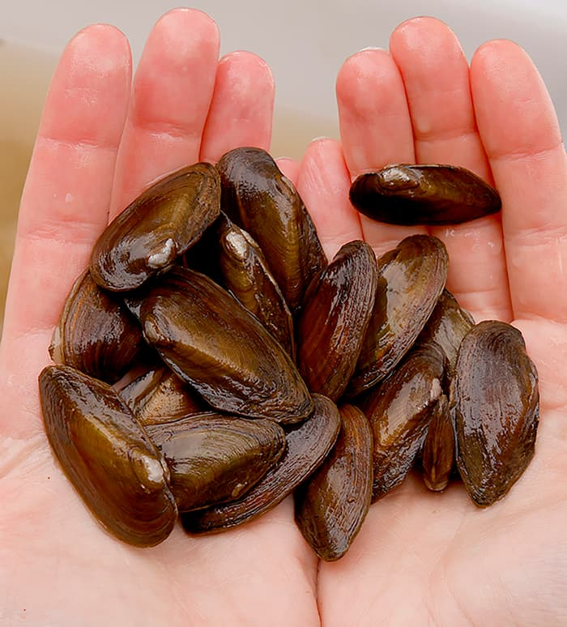

Overview
Unlike the robust Elliptio, the Eastern Pondmussel is built for the quiet waters of coastal ponds and slow-moving backwaters. Its namesake "nasute" (nose-like) posterior end is a key diagnostic feature for researchers in the field.

Habitat & Distribution
Typically found in silty or sandy substrates, S. nasutus is highly sensitive to habitat fragmentation. Our consortium tracks its distribution across the Atlantic Slope to better understand its patchy occurrence in the Northeast.